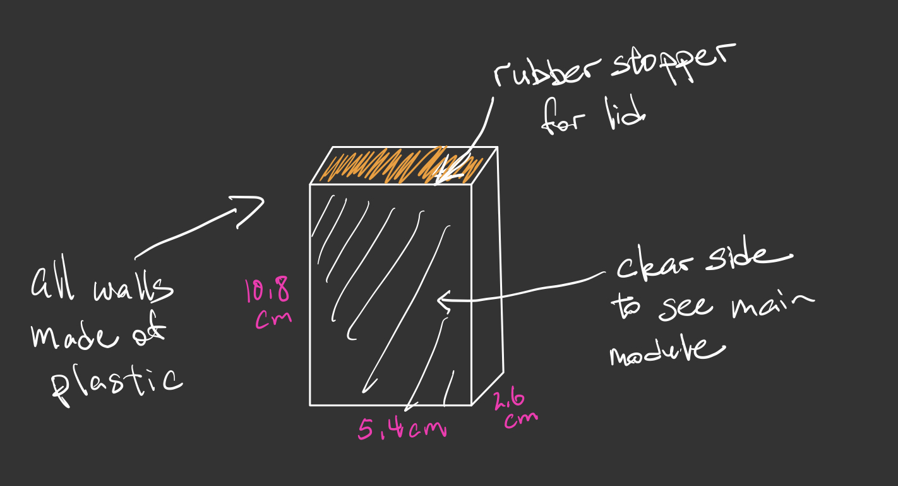
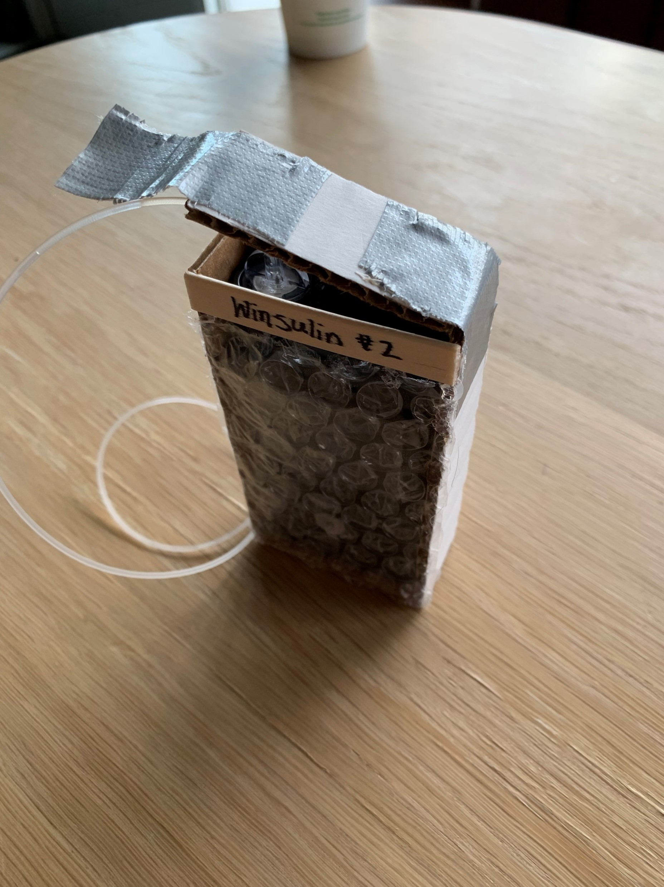
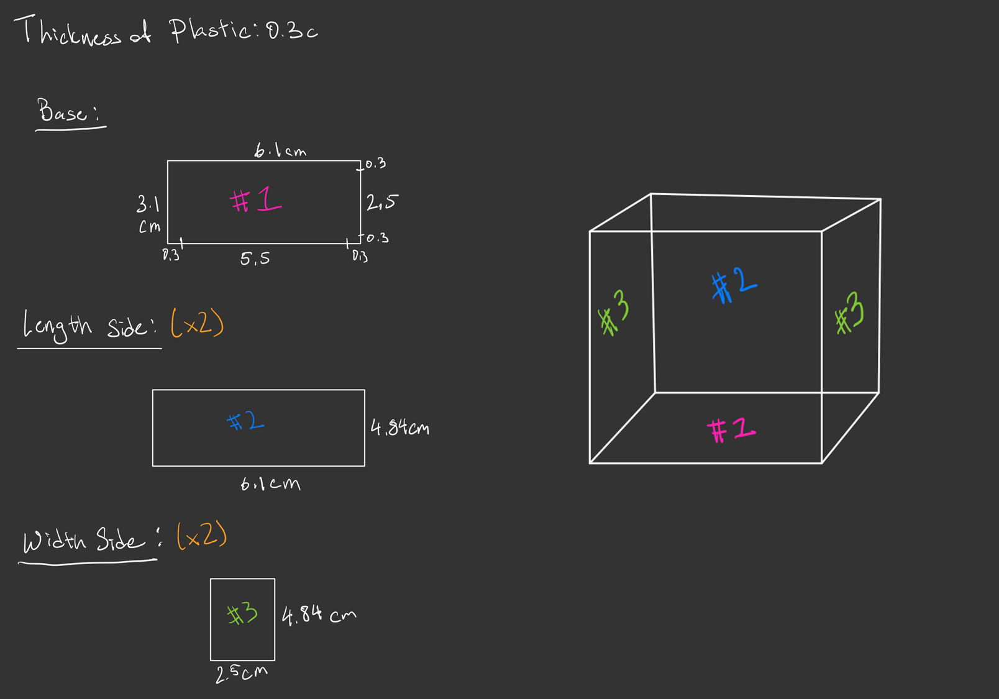
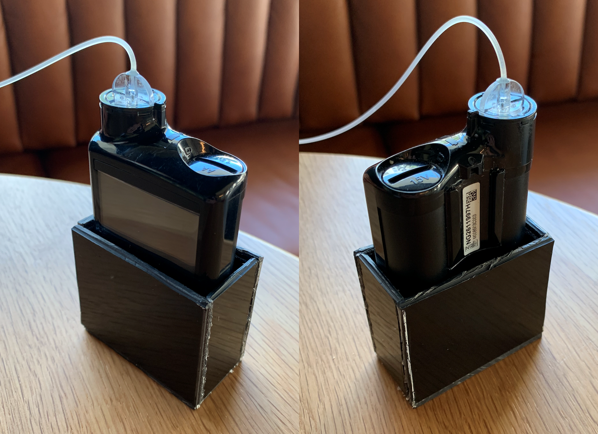
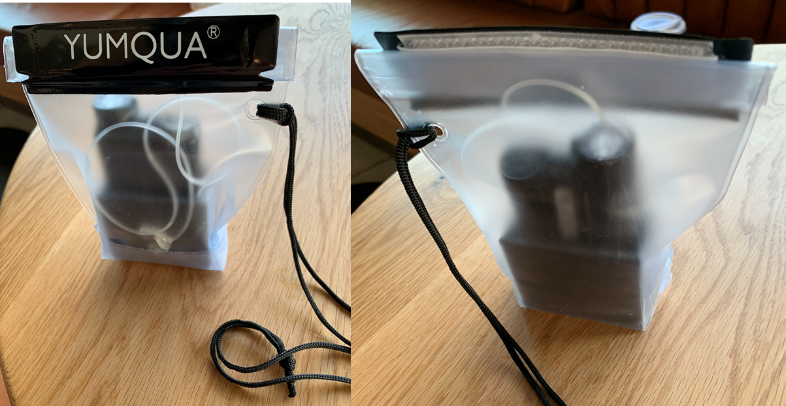
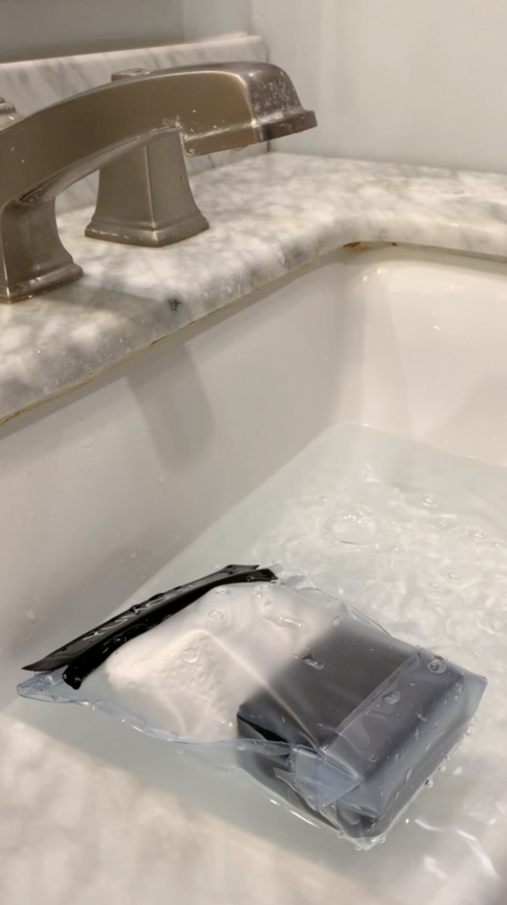

Winsulin!
Co-Designer
Sawyer is a rising senior in high school with type 1 diabetes. He lives at home with his parents. When he wakes up and before he goes to bed he has to calibrate his insulin pump, and before lunch everyday he takes a sample of his blood by poking his finger with a needle to check his blood sugar and adjust his intake and activities. I'm in the same grade as him and friends with him. He's been teaching martial arts for years, mainly taekwondo but he sometimes mixes in muay thai and kickboxing, and he has a black belt in taekwondo. He's played the piano since childhood and picked up the guitar during quarantine. He also answers hotline calls for an organization called Teenline, where he picks up calls from random teens and helps them talk through issues such as anxiety, depression, and even relationship problems. Something that he mentioned during our interview was that whenever he goes swimming he has to take off his insulin pump and place it on the side, which can get annoying because it beeps if he gets too far away from it. He doesn't want to use a commercial water proof case because they're too bulky.
Co-Designer Needs Statement
- I need a waterproof case for my insulin pump that isn’t bulky.
- I need to be able to easily fit the wire into the waterproof case.
- I need to have a waterproof case specifically fitted for the model of my insulin pump.
Product Requirements
- Waterproof
- One of the sides = transparent
- Tight fit
- Dimensions should be around: 5.4 cm width x 9.9 cm length x 2.6 cm depth
- Easy to clean
- Easy to open and has to close tightly
- Rigid material with more movable lid
- Has to store the wire
Initial Brainstorming Narrative
I want to make a waterproof case for my co-designer's insulin pump so he can place it closer to the pool whenever he swims.
Initial Prototype


Second Prototype
I'm trying to make a waterproof case for Sawyer's insulin pump. It will have succeeded if he determines that it's not too bulky and it actually is waterproof. I'm trying to figure out how to fit in the wire into the box in this prototype. I'm assuming that the box will only be used near water and will be separate from his body. For the bill of materials, I'm planning on using a neoprene rubber sheet for the rubber lid ($11.95): https://www.amazon.com/Neoprene-Flooring-Protection-Anti-Vibration-Anti-Slip/dp/B08QZJZ3SM, polycarbonate sheets for the sides ($54.95): https://www.amazon.com/Flexible-Polycarbonate-Protective-Included-Anti-Fogging/dp/B08CQF134M, and a waterproof adhesive ($2.94): https://www.amazon.com/Loctite-Plastic-Adhesive-1-Ounce-1360694/dp/B001F7E9VI. The total is $69.84.


Testing Plan
I'm going to meet up with Sawyer on the weekend and test my design with his insulin pump. The design will be a success if the insulin pump snugly fits inside the design and the lid is able to close over the top with the wire inside, and if Sawyer likes it.
Test Results
The test wasn't successful because while the insulin pump fit in snugly, the top of the case was 1.2 cm too short, so I couldn't fit in the wire without having to bend it a lot. Sawyer liked the design.
Test Conclusions
While this design does work well in theory and pretty easy to make with cardboard, waterproof materials for an actual product would be hard to find, especially since my cutting capabilities are limited to scissors and a boxcutter. So, I've decided to completely redesign my product, instead taking a commercially available waterproof pouch and modifying it so that the insulin pump doesn't move around too much inside so as to not bend the wire a lot.
Third Prototype
Bill of Materials
- Yumqua Clear Waterproof Bags (Small sized bag: 5" x 7.25")
- Install Bay 89-00-9031 ABS Plastic 12 X 12 X 1/8-Inch
- Plastic Sheet Cutter
- Clear Gorilla Glue

Download STL of pump holderBuild Instructions
- Cut out all five pieces from the piece of Install Bay ABS Plastic
- Use piece #1 as the base, and hot glue the other four pieces on according to their length and height to make a box with an open top.
- Arrange the open top box in the waterproof bag so that the space above it in the bag tightly fits the insulin pump, around 11 cm of space.
- Flip the remaining bottom space over one side of the bag and glue it down with gorilla glue so the box is now resting on the bottom of the bag instead of being in the middle of the bag.
- Flip the leftover bag on the side over and glue it down with gorilla glue.
- Glue the bottom of the inner box to the bottom of the bag.
On the other hand, if you want to just 3D print the inner box instead of making it by hand, the CAD file with the exact measurements are attached to this portfolio.
Test Plan
I tested the size and measurements of my prototype with my co-designer's insulin pump and placing it into the inner box and bag. For this test, I wanted to:
- Test if the insulin pump fit into the inner container with less than 3.5 mm of space on each side.
- Test if the insulin pump could fit into the bag without the wire at the top bending more than 90º so the wire would be protected.
- Make sure my co-designer approved.



Testing Results
The prototype worked well! There was less than 3.5 mm of space on each side, the wire didn't bend at more than a 90º angle, and my co-designer approved. It also took less than ten seconds for my co-designer to put his insulin pump inside the prototype and close the bag, which showed how easy to use it was. For the waterproof test, none of the paper towels were wet, showing that the bag was completely water tight.
Future Improvements
Overall, this prototype worked very well, but in the future I would take away the waterproof bag from the design and either replace it with a self made plastic box that completely covered the insulin pump or 3d print a plastic box to replace the waterproof bag. I still feel that the outside waterproof bag is too bulky so I would just try to make it as slim as possible. I wasn't able to use the plastic box idea that I originally had for my first and second prototypes because of the time constraint, but that wouldn't be a big factor outside of this course.
Scalability
It took me five hours alone just to hand make the small inner plastic box, so I don't feel that my design would be very scalable. In addition, the box is specifically fitted for my co-designer's insulin pump, so it would only work with that exact model or with objects of similar size. But, anyone with the same insulin pump model could use my prototype so it isn't too limited.
Design Process Reflection
If I had to go through this process again, I would either be more proactive about finding materials and tools to create my original idea which would've given me more time to work on it, or I would be more flexible with changes to my product. I was originally pretty dead-set on creating a plastic box by myself, so having to change to using an already commercially available product caused some issues for me.